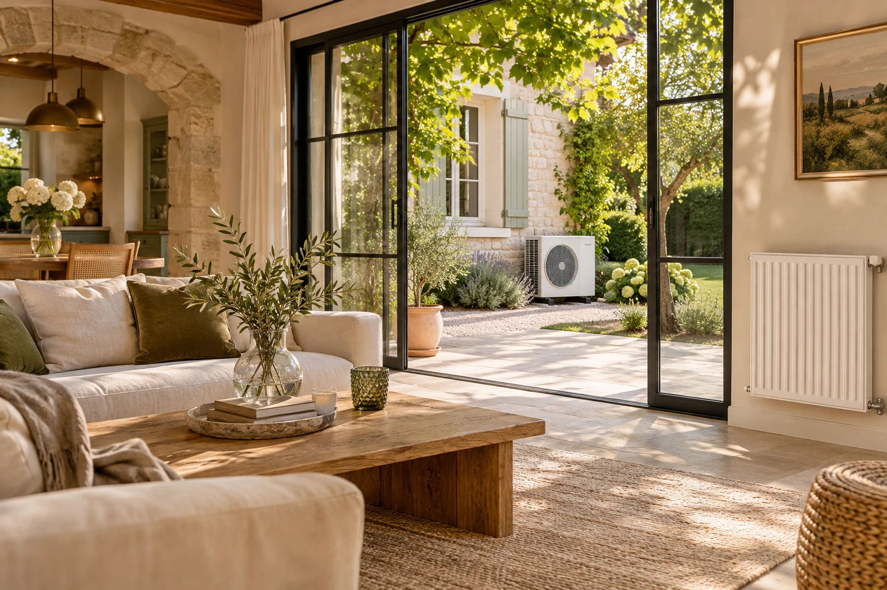
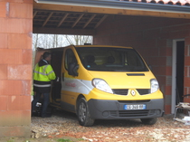
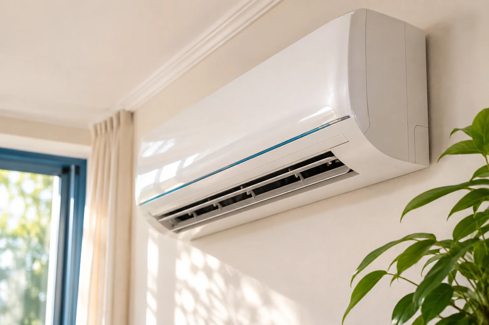
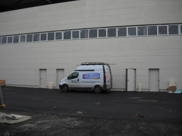

Un intérieur agréable, au fil des saisons
Chez JF RENOUS, nous installons, remplaçons et entretenons vos équipements de chauffage, climatisation et plomberie à Pineuilh. Nous étudions votre projet selon vos besoins et votre installation existante.
Installation, entretien et remplacement : nous accompagnons vos projets de chauffage, de climatisation et de plomberie.


Installation complète, remplacement de chaudière et pompes à chaleur : découvrons votre projet.
Découvrir le chauffage →
Installation et entretien de votre climatisation pour accompagner votre confort intérieur.
Découvrir la climatisation →
Plomberie, sanitaire, salle de bains et cuisine : des équipements au cœur du quotidien.
Découvrir la plomberie →Chez JF RENOUS, nous installons, remplaçons et entretenons vos équipements de chauffage, climatisation et plomberie à Pineuilh. Nous étudions votre projet selon vos besoins et votre installation existante.
Chaudières, pompes à chaleur, climatisation et sanitaire : nous intervenons en installation comme en rénovation. Découvrez nos activités pour préparer vos travaux.
Créée en 1986, notre entreprise s’est orientée vers le chauffage en 1989. Nous assurons également la maintenance et l’entretien des chaudières.
Un projet ou un équipement à entretenir ? Contactez notre bureau en précisant votre commune et votre besoin. Nous sommes situés au 37 avenue Georges Clemenceau, à Pineuilh.